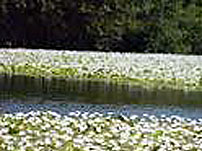
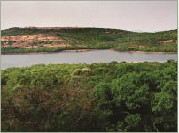
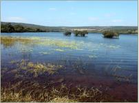

Nature of Flora
Per day visitor's allocation
(Total 3000 visitors per day)
- 7.00 am to 11.00 am - 1000 visitors
- 11.00 am to 3.00 pm - 1000 visitors
- 3.00 pm to 6.00 pm - 1000 visitors
(For this slot, reporting time is 3.00 pm to 4.00 pm compulsory)
How to reach
- Kas Via Satara - Click Here
- Kas Via Shendre - Click Here
- Kas Via Pachawad-Kudal - Click Here
Contact Person
- Somnath Jadhav: 9422592035
- Dattatray S. Kirdat: 8698993553
- Dnyaneshwar Akhade: 8600523113
- Vitthal Kadam: 8459876484
- Ramchandra Umbarkar: 9422608996

25 Km away from Satara District H.Q. & 20 Km away from Northern part of Koyana Sanctuary. Locally called as 'Kas Pathar' or 'Plateau of Flowers'.

Elements of outstanding Universal Values are found on this Plateau, making it rich into Biodiversity. Many species which are still new to the Botanical Science are observed on plateau.

Out of the 624 flowering species, 39 species are found in the Kas Region only. It is approximately 6% of Red data species.